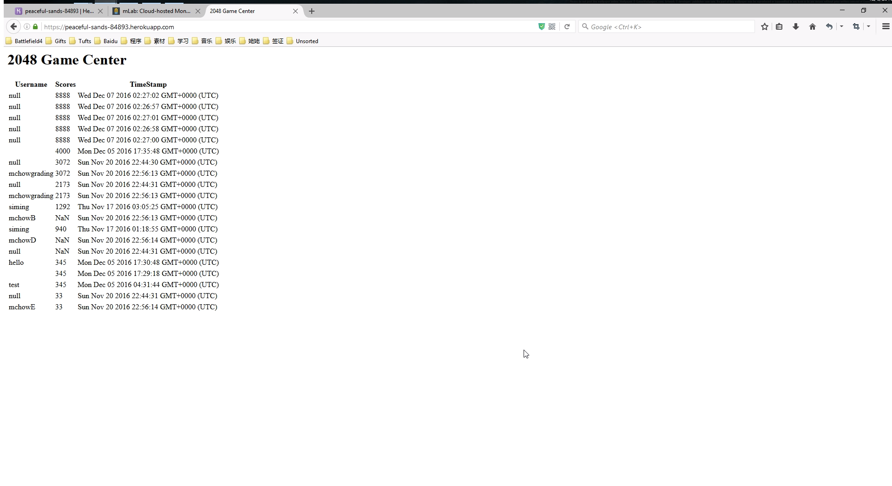
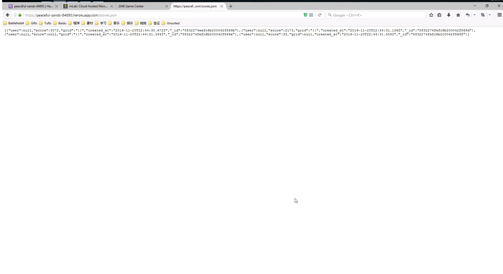

The product "peaceful-sands-84893" is a Heroku app that acts as a server for a modified version of the game 2048. It uses Node.js, Express and Mongodb to store, serve and display user data of 2048. However, the app has potential security and privacy vulnerabilities. I was assigned to document and resolve the security and privacy issues in this application.
Link to peaceful-sands-84893I first tried to attack some of the common issues by changing query strings without reading the source code. Then, I read the source code to check potential security holes, and used Curl and Burp Suite to perform more in depth testings on the server by trying malicious get and post requests.
I have found 2 major issues in the app. The first issue involves the method to submit user data and the main game center page, where a hacker could change the content of the game center page to display malicious data or redirect to malicious sites. The second issue is that the app doesn't have any spam detection for its APIs, meaning it's vulnerable to a DDOS attack where an attacker could overwhelm the server by requesting or posting a ton of data at once. There is also a bug I found that allows users to insert useless null data into the database, but this is a minor issue.
This XSS problem was located on the main game center page. Malicious Javascripts could enter the database through the submit.json POST method, and then appear on the html game center page when the website retrieves data from mongodb database without validating it. This issue is highly severe because it basically gives attackers the ability to modify contents on your html page, create annoying popup windows, or jump to another malicious site. In other words, a hacker could exploit this issue to make the website completely unusable.
For example, the following Curl command can make the game center page jump straight to a malicious site:
curl.exe --data "username=<meta http-equiv='refresh' content='0; url=http://hackerURL/'/>&score=30&grid={}" https://peaceful-sands-84893.herokuapp.com/submit.json
The solution is to validate data before inserting them into the database, and validate again before displaying data on an html page. We validate the data by escaping the following characters with HTML entity to prevent an execution context:
& change to &
< change to <
> change to >
" change to "
' change to '
/ change to /
The app is vulnerable because it does not have any obvious methods to prevent or limit DoS/DDoS attacks. The attack could occur on any of the app's html page or APIs if the attacker overwhelm the site with enough traffic. I believe the severity of this issue is medium, because although DDoS attacks are usually very severe, Heroku does have their own DDoS mitigation methods in their system infrastructure (Reference: Heroku Security Policy).
I don't have any screenshots available because I have neither the method nor intention to launch an actual DDoS attack. However, it is still a good practice to use a DDoS prevention method in your own code. A good example is the DDoS prevention service on npm. (The Documentation can be found here)
How to include with Express:
var Ddos = require('ddos');
var ddos = new Ddos;
var express = require('express');
var app = express();
app.use(ddos.express);
This is technically not a security issue, but it is a bug that affects the functionality of the app. In the submit.json method, I believe your intention was to check to make sure that all the parameters in the request body are non null, but the if statement in your code was "if (user !== null && score !== null && grid !== null){...", which allows null data to be inserted into the database as long as one of the parameters isn't null. This results in 2 bugs that occur in the scores.json method and on the game center main page. As shown in the following pictures, the game center displays data with null values; and when the username query is absent in the URL, the scores.json method would actually print all the data with null usernames.
 Overall, the biggest issue with this app is the Cross-site Scripting vulnerability. In the future, refer to this web app security check list before launching your app, make sure you did your best to find and fill the security loop holes. Also, good job on preventing the "$ne" bug on mongodb. Your scores.json GET method is secure.